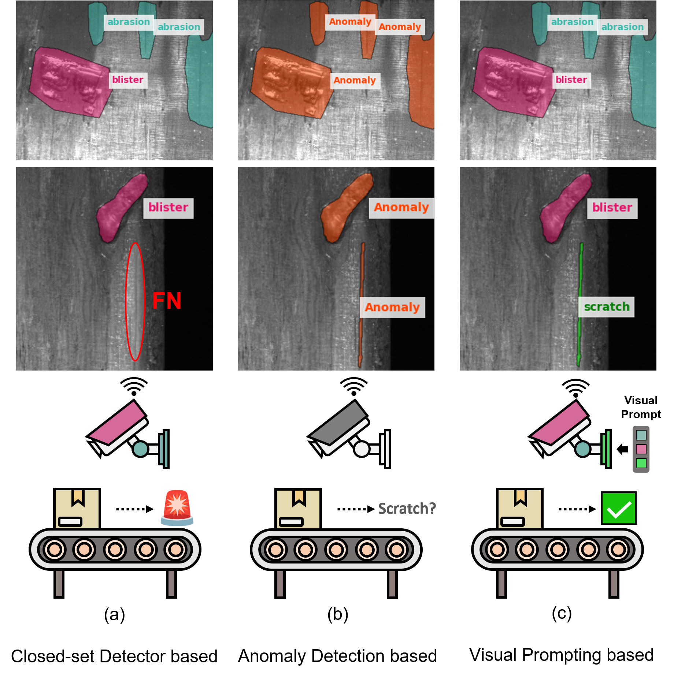
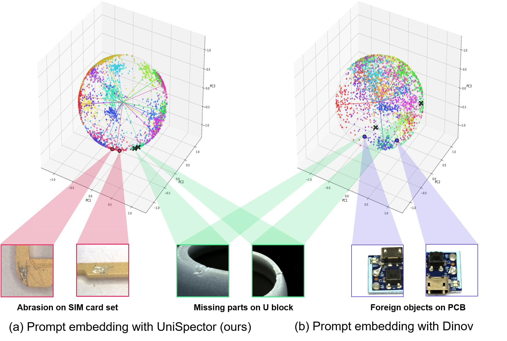
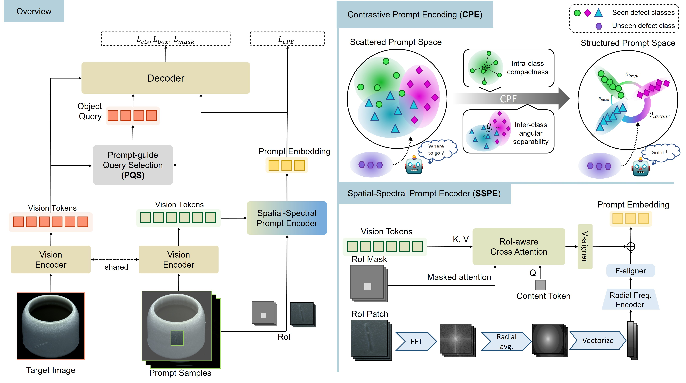
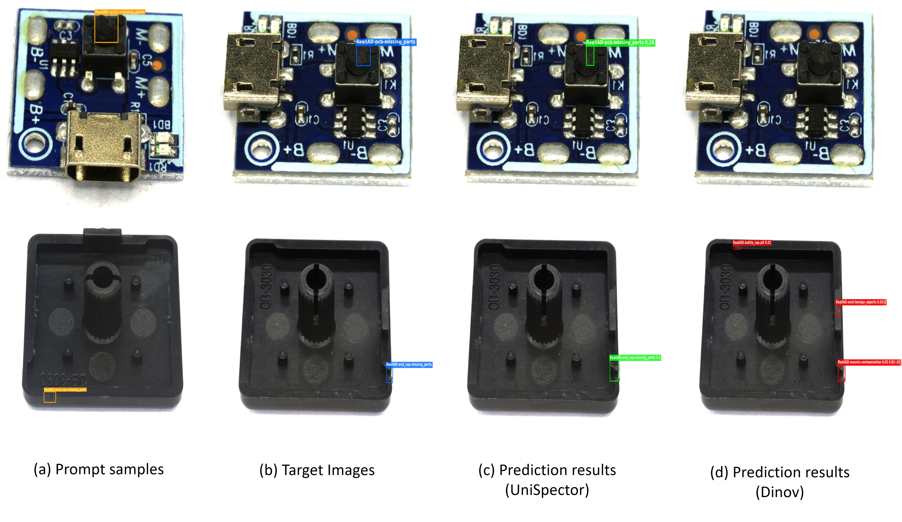

Although industrial inspection systems should be capable of recognizing unprecedented defects, most existing approaches operate under a closed-set assumption, which prevents them from detecting novel anomalies. While visual prompting offers a scalable alternative for industrial inspection, existing methods often suffer from prompt embedding collapse due to high intra-class variance and subtle inter-class differences. To resolve this, we propose UniSpector, which shifts the focus from naive prompt-to-region matching to the principled design of a semantically structured and transferable prompt topology. UniSpector employs the Spatial-Spectral Prompt Encoder to extract orientation-invariant, fine-grained representations; these serve as a solid basis for the Contrastive Prompt Encoder to explicitly regularize the prompt space into a semantically organized angular manifold. Additionally, Prompt-guided Query Selection generates adaptive object queries aligned with the prompt. We introduce Inspect Anything, the first benchmark for visual-prompt-based open-set defect localization, where UniSpector significantly outperforms baselines by at least 19.7% and 15.8% in AP50b and AP50m, respectively. These results show that our method enable a scalable, retraining-free inspection paradigm for continuously evolving industrial environments, while offering critical insights into the design of generic visual prompting.

(a) While existing supervised detectors perform well in closed-set scenarios with fixed defect categories, such assumptions rarely hold in practice, as new defect types continuously emerge and the definition of “normal” may shift over time. (b) Anomaly detection methods do not support specifying a defect of interest; they only flag generic deviations from normality. (c) Visual prompting enables open-set recognition by aligning unseen defects with exemplar prompts, providing a scalable visual inspection framework.

(b) Existing Visual Prompting approaches treat prompt embeddings merely as implicit representations learned via prompt-to-region matching, which leads to prompt embedding collapse due to high intra-class variance and subtle inter-class difference in industrial domain. (a) To overcome the collapse, we shift the focus from simple prompt-to-region matching to the principled design of a semantically structured and transferable prompt topology.

To mitigate prompt embedding collapse inherent in prompt-to-region matching due to high intra-class variance and subtle inter-class difference in industrial domain, UniSpector employs two critical components::
We introduce Inspect Anything (InsA), the first benchmark for visual-prompt-based open-set defect detection and segmentation under in-domain and cross-domain settings. For the visual grounding category, we evaluate models using a language description of the form “a {defect_name} defect of the {product_name}”.
| Methods | In-domain | Cross-domain | Overall | |||||||||||||
|---|---|---|---|---|---|---|---|---|---|---|---|---|---|---|---|---|
| GC10 | MagneticTile | Real-IAD | MVTec AD | 3CAD | VISION | VisA | Avg | |||||||||
| APb50 | APm50 | APb50 | APm50 | APb50 | APm50 | APb50 | APm50 | APb50 | APm50 | APb50 | APm50 | APb50 | APm50 | APb50 | APm50 | |
| visual grounding | ||||||||||||||||
| GroundingDINO | 9.6 | - | 26.7 | - | 0.3 | - | 1.4 | - | 0.0 | - | 0.0 | - | 0.0 | - | 5.4 | - |
| GroundingDINO† | 8.0 | - | 11.0 | - | 1.2 | - | 18.8 | - | 0.0 | - | 0.0 | - | 0.1 | - | 5.6 | - |
| YOLO-World | 7.0 | 2.1 | 30.7 | 28.6 | 0.3 | 0.2 | 2.7 | 2.4 | 0.0 | 0.0 | 0.3 | 0.3 | 1.2 | 1.2 | 6.0 | 5.0 |
| YOLO-World† | 3.4 | 1.5 | 29.8 | 27.5 | 21.7 | 16.7 | 5.4 | 4.7 | 0.0 | 0.0 | 0.0 | 0.0 | 1.7 | 1.6 | 8.9 | 7.4 |
| visual prompting | ||||||||||||||||
| SEEM | - | 0.2 | - | 0.2 | - | 0.0 | - | 0.3 | - | 0.0 | - | 0.0 | - | 0.0 | - | 0.1 |
| SEEM† | - | 0.1 | - | 0.6 | - | 0.0 | - | 0.1 | - | 0.0 | - | 0.0 | - | 0.0 | - | 0.1 |
| SegGPT | - | 16.0 | - | 20.1 | - | 3.1 | - | 6.8 | - | 1.7 | - | 0.9 | - | 1.7 | - | 7.2 |
| SINE | 0.7 | 0.5 | 2.0 | 2.0 | 0.6 | 0.5 | 4.6 | 4.4 | 0.1 | 0.2 | 0.7 | 0.6 | 0.9 | 0.9 | 1.4 | 1.3 |
| SINE† | 0.9 | 0.9 | 1.6 | 1.9 | 1.2 | 0.5 | 4.5 | 4.1 | 0.1 | 0.1 | 0.6 | 0.2 | 1.0 | 0.8 | 1.4 | 1.2 |
| DINOv | 3.2 | 0.8 | 30.0 | 26.9 | 2.2 | 1.4 | 19.0 | 15.0 | 4.1 | 2.1 | 4.3 | 3.8 | 8.4 | 7.0 | 10.2 | 8.1 |
| DINOv† | 16.5 | 16.6 | 48.4 | 39.6 | 21.0 | 17.5 | 15.9 | 15.2 | 2.9 | 1.9 | 4.6 | 3.8 | 10.4 | 8.5 | 17.1 | 14.7 |
| T-Rex2† | 32.4 | 33.9 | 49.0 | 38.0 | 25.1 | 28.8 | 24.4 | 22.4 | 4.3 | 2.9 | 5.4 | 4.3 | 7.8 | 6.7 | 21.2 | 19.6 |
| YOLOE | 1.6 | 0.4 | 48.3 | 45.4 | 16.6 | 13.9 | 26.9 | 22.7 | 4.9 | 2.0 | 7.2 | 5.9 | 14.4 | 12.2 | 17.1 | 14.6 |
| YOLOE† | 10.7 | 9.5 | 43.3 | 41.8 | 17.2 | 15.5 | 25.8 | 23.9 | 3.3 | 1.4 | 3.5 | 3.0 | 17.7 | 15.3 | 17.4 | 15.8 |
| UniSpector (Ours)† | 38.2 | 36.9 | 63.3 | 57.7 | 69.1 | 56.7 | 53.5 | 46.5 | 14.1 | 10.0 | 15.3 | 12.5 | 32.8 | 27.8 | 40.9 | 35.4 |
Open-set detection and segmentation performance on the InsA. † denotes models fine-tuned on in-domain seen sets of InsA.
Given a user-specified region in the prompt sample, UniSpector successfully identifies corresponding unseen defect instances in the target image, with DINOv included for comparison.

If you find our work useful, please consider citing our paper.
TBU